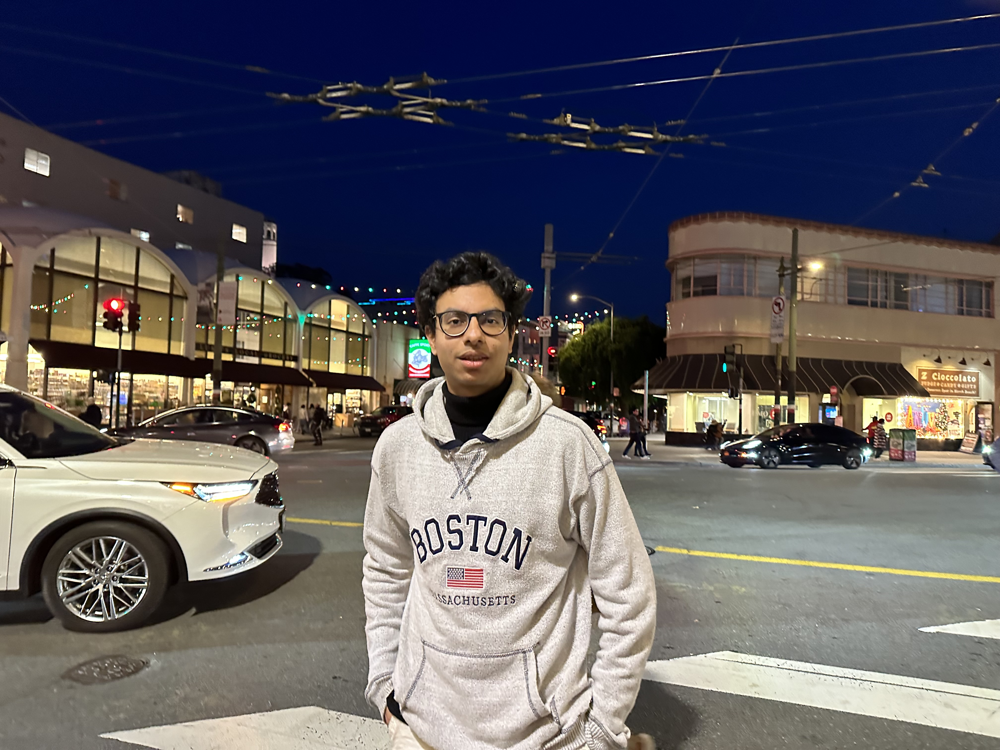
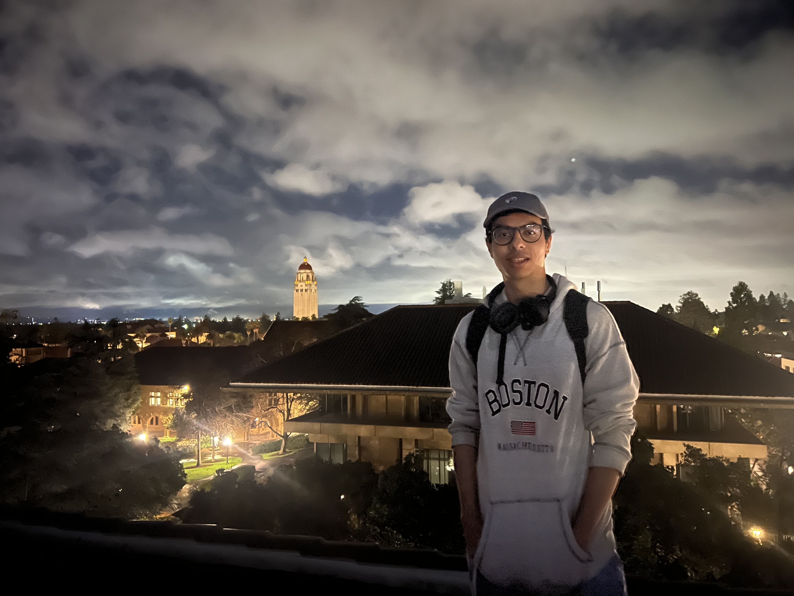
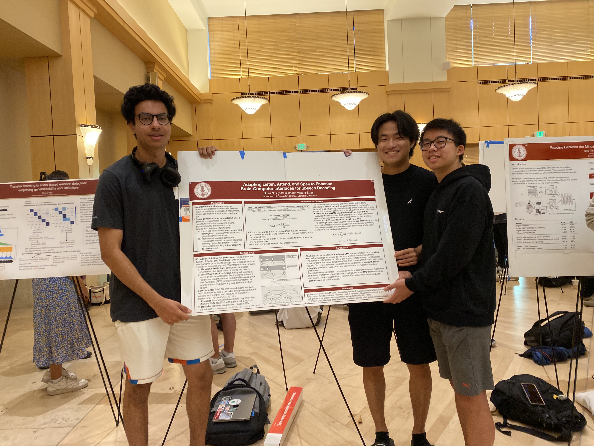
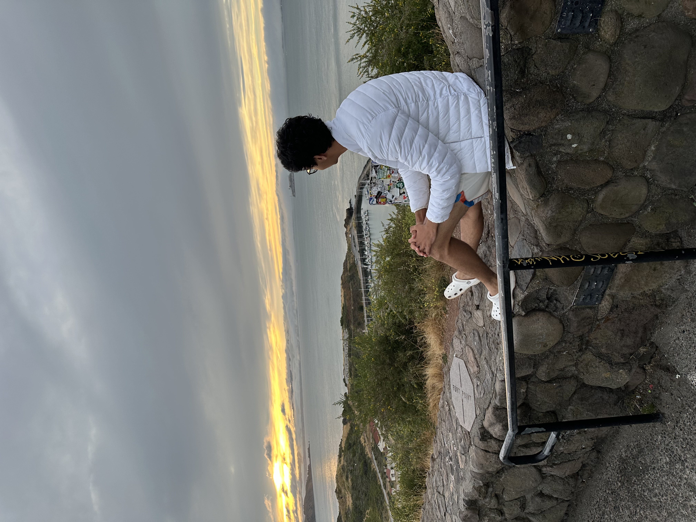

Currently building Salus (YC W26) — making AI agents reliable. Stanford CS & Math. Always exploring how technology can solve interesting problems.

I'm a junior at Stanford University studying Mathematics and Computer Science, drawn to the intersection of numbers, data, and computation. Currently building Salus (YC W26), a startup focused on agent reliability — making sure AI agents actually do what they're supposed to.
My interests span artificial intelligence, natural language processing, computational linguistics, and financial technology. I had the honor of representing India at the International Linguistics Olympiad, where I won a Bronze medal, and earned two Silver medals at the Asia Pacific Linguistics Olympiad, finishing first in India both times. I was also recognized as a Rise Global Winner by Schmidt Futures for building a gamified app to preserve the Sanskrit language.
Beyond academics, I'm involved in Stanford's tech community through ACM and the Blockchain Club, compete in ICPC, and help organize the Stanford Math Tournament.
Building Salus, a startup focused on agent reliability — making AI agents do what they're actually supposed to.
Represented India at the International Linguistics Olympiad and won a bronze medal, competing against the world's best in solving problems from unfamiliar languages and writing systems.
Earned two silver medals at the Asia Pacific Linguistics Olympiad across multiple years of competition.
Selected as an RSI Scholar at MIT, one of the most prestigious and selective STEM summer programs for high-school students worldwide.
Selected as a Rise Global Winner by Schmidt Futures for developing a gamified app to promote Sanskrit language preservation and make it easy to learn.
Building Salus, a YC W26 startup making AI agents reliable — ensuring agents actually do what they're supposed to.
Working on improving long-context reasoning capabilities in large language models. Current research focus.
Building AI-powered tools to make legal processes more accessible and efficient.
Worked on brain–computer interfaces and developing mathematically strong reasoning LLMs.
Applied NLP and computer vision to detect bias in historical documents.
Built LLM-based credit rating models using financial filings and economic data.
At MIT's Probabilistic Computing Project, as part of the Research Science Institute, worked on natural language translation models.
Multi-agent LLM system combining technical and sentiment analysis to drive cryptocurrency trading decisions.
Search through your photos using natural language. Semantic image search powered by vision–language models.
Your competitive-programming assistant. Helps with problem analysis, solution generation, and optimization.
Predicts tennis match outcomes using deep learning and real-time data. Sports analytics meets AI.
AI-powered poker strategy tool. Built after winning the Stanford–Berkeley Poker Tournament.
A cool utility project. Check out the repo for more.
When I'm not working on AI or research, I'm usually reading, playing badminton, or deep in sports stats. I'm a big reader — from sci-fi to historical novels like The Count of Monte Cristo. I also love poker, and recently won the Stanford–Berkeley Poker Tournament. Inspired by the game's mix of math and strategy, I built PokerGenius. Always down for a game of heads up.



meursault gets cooked for not performing grief the way society expects. "the sun made him do it" is still the funniest defense ever.
kafka wrote the most accurate depiction of dealing with any large institution. josef k would not survive the DMV.
nothing happens and yet everything happens. you finish it and just stare at the wall for 20 minutes.
the "carrying the fire" line lives in my head rent free. mccarthy proves you don't need adjectives to make someone cry.
plath makes you feel the walls closing in through perfectly normal sentences. the fig-tree passage alone is worth it.
i'm not sure i understood all of it and i'm not sure you're supposed to. the judge is the scariest character in all of literature.
you watch it for the plot and stay for the way these people weaponize dinner conversation. "you can't do anything because you're nothing" is peak writing.
tony soprano is the reason every prestige show has a morally complex lead. also genuinely one of the funniest shows ever made.
i've seen this show an embarrassing number of times. the jim-and-dwight dynamic carries civilization.
"No man ever steps in the same river twice, for it's not the same river and he's not the same man."
Heraclitus the most elegant way to say you're not who you were yesterday.
"In the midst of winter, I found there was, within me, an invincible summer."
Camus i think about this more than i should.
"Since we're all going to die, it's obvious that when and how don't matter."
Camus weirdly the most freeing thing i've ever read.
"The torment of precautions often exceeds the dangers to be avoided. It is sometimes better to abandon one's self to destiny."
Napoleon the most eloquent way to say stop overthinking.
"There are cathedrals everywhere for those with eyes to see."
Unknown heard it once and it never left. makes you pay attention to the ordinary.
"The harder I work, the luckier I get."
Unknown everyone says it. still hasn't been disproven.
"Shoot for the moon — even if you miss, you'll land among the stars."
Unknown corny? maybe. but it got me through more late nights than i'd admit.
Running is the closest thing to meditation that actually works. Mile 8 is where your brain finally shuts up.
Me not a quote i found somewhere. just something i've learned the hard way at 6am.